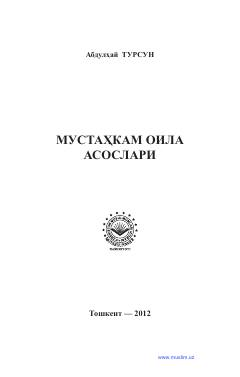

MOIslomiy qarashlar asosida mustahkam va baxtli oila qurish yo'llari haqida qo'llanma.
Ushbu kitobda islom dini ta'limotlari asosida mustahkam oila qurish, uning jamiyatdagi o'rni, er-xotin munosabatlari va oilaviy vazifalar yoritilgan. Shuningdek, oilani asrab-avaylash, farzandlar tarbiyasi va jamiyat barqarorligini ta'minlash masalalariga alohida e'tibor qaratilgan.